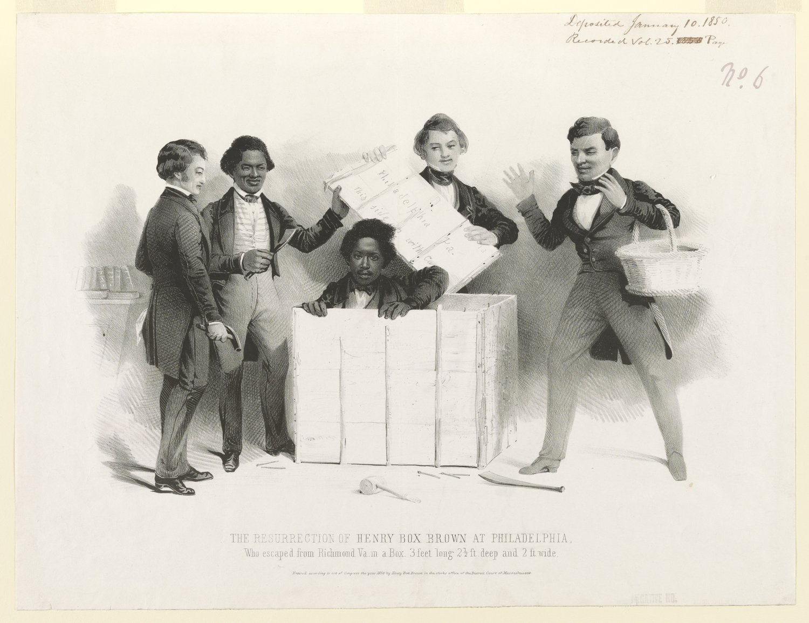
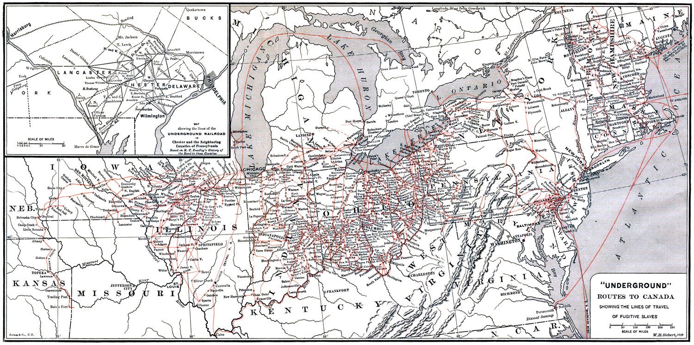
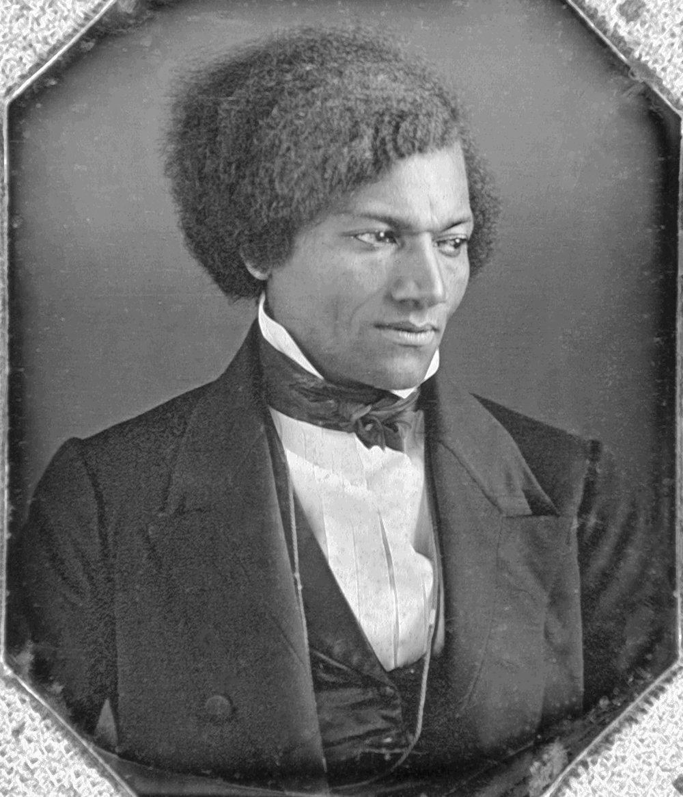
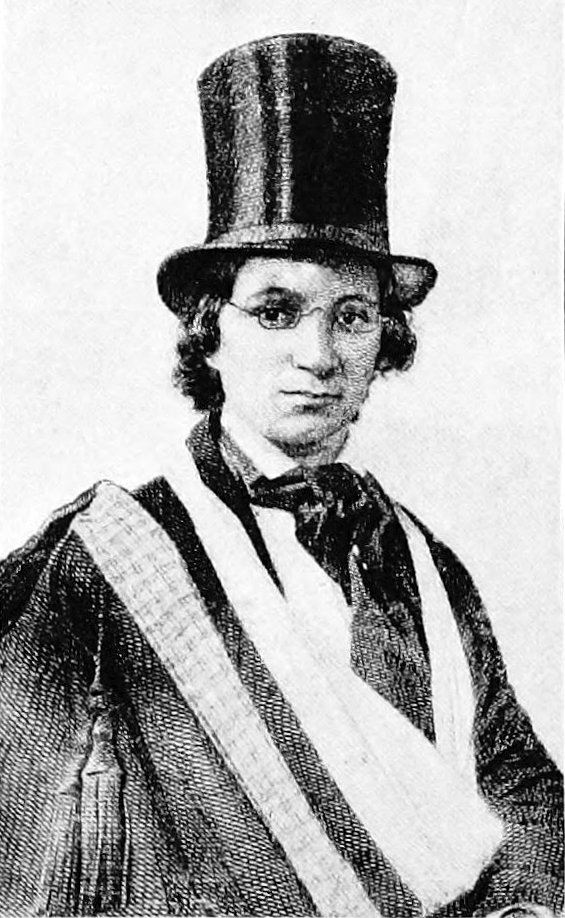
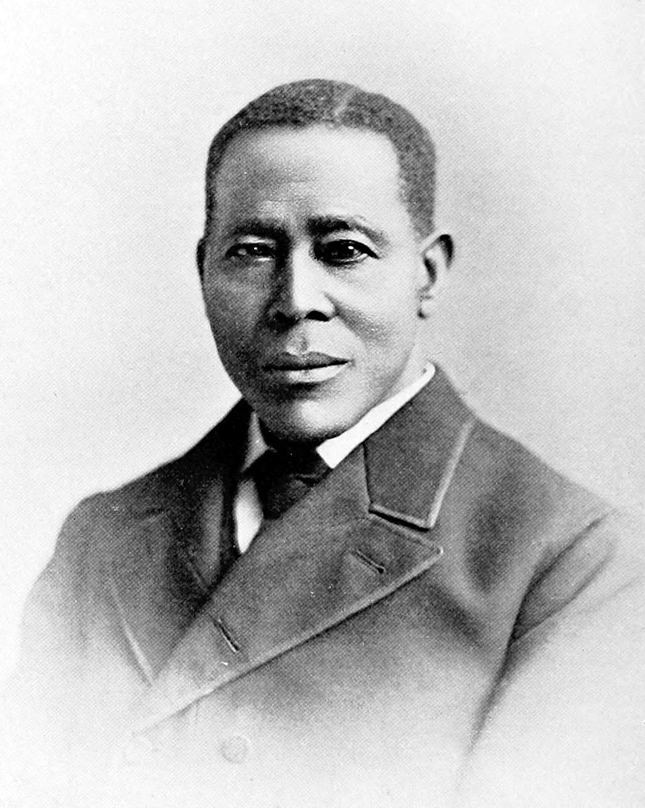
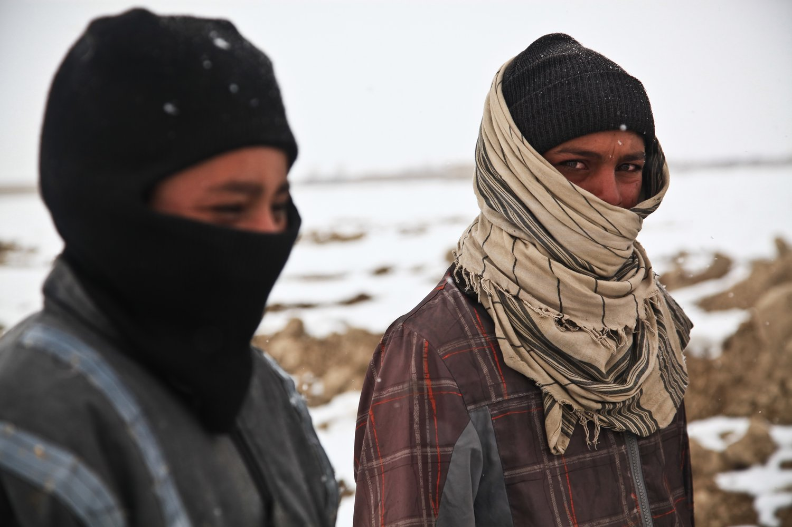

Savvy Security LLC
The Federated Cell
What the Underground Railroad knew about operational security — and what it costs to relearn it.
A note on voice and scope. I've written this the way I'd write an adversarial assessment for a client who is about to do something dangerous for good reasons. That means the first half is history, told straight, and the second half is an honest accounting of what a civilian can and cannot do when people they care about are trapped somewhere with a target on their back. It also means I am going to spend a lot of words telling you what not to do. That is not squeamishness. It is the assessment. The most common way well-meaning people get other people killed is by treating a rescue as a project rather than a threat model.
The Network
I. The box
On the morning of March 30, 1849, four men in Philadelphia stood around a wooden crate that had arrived by delivery wagon before daybreak. It was addressed to James Miller McKim of the Pennsylvania Anti-Slavery Society and marked Dry Goods. It measured roughly three feet by two by two and a half. It had three small holes bored opposite one end.
One of the men knocked and asked: "Is all right within?"
A voice from inside the box answered: "All right."
Henry Brown had been in that crate for twenty-seven hours. He had traveled roughly 350 miles from Richmond by wagon, railroad, steamboat, wagon again, railroad, ferry, railroad, and finally delivery wagon. He had been set down upside-down more than once despite the This Side Up stenciled on the lid. He had a bladder of water, a few biscuits, and a coarse woolen lining. He had gotten out of work on the day of shipment by burning his hand to the bone with sulfuric acid.

That exchange — Is all right within? / All right — is a challenge-response handshake at the receiving endpoint of a covert channel. It is also two men, one of them in a box, confirming that the other is alive.
Both readings are true. If you hold only the first one, you will write a clever article. If you hold only the second, you will write a moving one. The thing I want you to hold is that a network of people spent thirty years solving the first problem because the second one was unbearable.
II. Why this belongs in a security publication
I want to be precise about the claim, because the loose version of it is condescending and the tight version is genuinely useful.
The loose version: the Underground Railroad used secret codes, kind of like encryption. Mostly false, as we'll see. The famous "codes" are largely twentieth-century folklore, and repeating them will cost you your credibility with anyone who checks.
The tight version, and the one this piece argues: the Underground Railroad was a federated, cellular, adversarially-resilient human network that operated for three decades inside the jurisdiction of a state that had criminalized it, deputized the population against it, and financially incentivized its adjudicators to rule against it — and it survived because of structural properties that we now have names for.
Not because it was clever. Because it was shaped correctly.
Every problem it solved has a modern name:
| 1850s problem | Modern discipline |
|---|---|
| Who gets told, and how much? | Compartmentalization, need-to-know |
| How do you verify a stranger? | Authentication, identity proofing |
| How do you signal without being read? | Covert channels, out-of-band comms |
| What happens when one node falls? | Blast radius, segmentation, lateral movement |
| Do you keep records at all? | Data retention policy |
| A paid adversary with legal search authority | Well-resourced threat actor |
| One angry contractor burns seventy-seven people | Insider threat |
| A widely-believed control with zero evidence | Security theater |
| Same technique, same route, second time | Signature-based detection |
The failure condition was not a breach notification. It was a human being sold into the Deep South.
III. Three eras of getting it wrong
Before anything else: the scholarship on this subject has been wrong twice, publicly, in ways that are themselves an infosec lesson. If you take nothing else from this section, take the shape of the error.
Era one: the network diagram (1898). The first scholarly study, by Wilbur Siebert, named some 3,200 "agents" — virtually all of them white men — presiding over an elaborate network of fixed routes, illustrated with maps that looked much like those of an ordinary railroad. Siebert built this largely from questionnaires sent to aging abolitionists thirty-five years after the fact.

This is a beautifully drawn topology diagram assembled from stale, self-reported asset inventories, by people with an incentive to overstate their own importance. Every security architect has seen this document. It is on a wall somewhere in your building right now.
Era two: the teardown (1961). Larry Gara's The Liberty Line is still, sixty-plus years on, the most influential book on the subject. Gara showed how pre-Civil War partisan propaganda, postwar reminiscences by fame-hungry abolitionists, and oral tradition had manufactured the belief in a vast secret organization. His central correction was that enslaved people were the actors, not the cargo: they carried out their runs themselves, and generally received organized aid only after reaching territory where they still faced return.
Gara was right, and the field overcorrected so hard that scholarship on the topic nearly stopped for four decades.
Era three: the synthesis (roughly 2000–present). Aided by newly digitized abolitionist newspapers and local archives, historians reconstructed the Underground Railroad as a collection of loosely interlocking local networks of activists, Black and white, that waxed and waned over time and still moved a significant number of people to freedom. Eric Foner's formulation, from Gateway to Freedom (2015), is the one to hold:
The "underground railroad" should be understood not as a single entity but as an umbrella term for local groups that employed numerous methods.
This is the load-bearing fact of the entire article.
There was no organization. There was no charter, no membership roll, no headquarters, no central authority, no protocol specification. There were dozens of autonomous local groups with overlapping membership, ad hoc peering agreements, wildly varying tradecraft, and no shared command.
That is not a weakness in the story. That is the security architecture. You cannot seize a headquarters that does not exist. You cannot roll up a membership list that was never compiled. You cannot decapitate a network with no head. When the Philadelphia node was under pressure, Wilmington kept running. When New York's committee collapsed and re-formed — which it did, more than once — Syracuse did not notice.
Foner's numbers for New York alone: more than 3,000 people moved to freedom between 1830 and 1860, through a city whose banks, merchants, and police were economically fused to the slave economy.
On total scale, be honest and give the range. Estimates run from roughly 30,000 to over 100,000 across the network's life. For Canada specifically, more than 30,000 were said to have escaped there during the twenty-year peak, though U.S. Census figures account for only about 6,000. Your audience respects error bars more than round numbers.
IV. The threat model
You cannot assess a defense without assessing the adversary. This is the section that makes everything after it land.
The pre-1850 baseline
Under the Fugitive Slave Act of 1793, enforcement was inconsistent. Northern states passed personal liberty laws. Northern juries frequently refused to convict. The adversary had legal authority but poor operational reach.
The 1850 escalation
The Fugitive Slave Act of 1850, drafted by Senator James M. Mason of Virginia as part of the Compromise of 1850, was a capability upgrade. Read the provisions as an adversary changelog:
Privilege escalation to federal scope. The Act created a new class of federal commissioners with concurrent jurisdiction alongside circuit and district courts — effectively doubling the number of officials who could process a claim, and guaranteeing a claimant could find a sympathetic one.
Authentication requirements removed. Alleged fugitives could not testify on their own behalf. No jury trial was provided. Both the fact of escape and the identity of the person were determined on purely ex parte testimony. Law enforcement everywhere was required to arrest on as little as a claimant's sworn statement of ownership. Habeas corpus was declared irrelevant.
Think about what that means as an identity system. A single unverified assertion by an interested party was sufficient to establish identity, and the person whose identity was in question was barred from contesting it. There was no second factor. There was no appeal. The certificate of removal was final.
A bounty, deliberately misaligned. This is the detail that stops a security audience cold. Commissioners were paid ten dollars when they ruled for the claimant and issued a certificate of removal, and five dollars when they found the evidence insufficient and released the accused.
The adjudicator was paid double to rule against the human being.
Paul Finkelman calls it "one of the most repressive and unfair statutes ever adopted by the United States." I would put it differently: it is the cleanest historical example I know of an incentive structure designed to produce a specific output while maintaining the aesthetics of due process. If you have ever argued that a bug bounty program was mispriced, or that a compliance regime was optimizing for the wrong metric, this is your ancestor.
Conscription of the population. Section 5 empowered commissioners and marshals to "command all good citizens to aid and assist in the prompt and efficient execution of this law." A marshal could deputize a bystander on the street. Refusal carried a fine.
That converts every uninvolved person in the North from neutral terrain into potential adversary asset. In network terms: the Act attempted to turn the entire population into a distributed sensor grid with enforcement authority.
Criminalizing the defenders. Anyone aiding a fugitive with food or shelter faced up to six months' imprisonment and fines of up to $1,000 — roughly $38,700 in today's money.
And Douglass understood exactly what had changed. In "What to the Slave Is the Fourth of July?" (1852):
By an act of the American Congress, not yet two years old, slavery has been nationalized in its most horrible and revolting form. By that act, Mason & Dixon's line has been obliterated; New York has become as Virginia.
The trust boundary was deleted. There was no safe zone left short of Canada.
The threat that predated the law
Kidnapping. Free Black people — frequently children — were abducted off Northern streets and sold south. In New York, Wall Street financiers and merchants whose fortunes rode on slave-grown cotton encouraged police officers to operate what were openly called "kidnapping clubs," arresting as many Black men, women, and children as possible for shipment south without trial, enabled by corrupt judges, politicians, and bounty hunters.
Solomon Northup's Twelve Years a Slave is the famous case. It was not the unusual one.
So the full threat picture, stated as an assessment: the adversary held the courts, the police, the ports, the press, and the money; possessed legal search and seizure authority; could compel civilian assistance; paid its own judges a premium for adverse rulings; operated a criminal kidnapping arm with police participation; and after 1850 had national jurisdiction with no safe interior.
Against that, a network with no budget, no headquarters, no legal standing, and no central command moved tens of thousands of people.
I want you to sit with the asymmetry, because in the second half of this piece we are going to talk about what you can do with a laptop and no intelligence, and it is going to feel inadequate. It is inadequate. So was theirs.
V. The disclosure war
In 1845, Frederick Douglass opened a public argument that any security practitioner will recognize on sight. He refused to describe how he had escaped, and then explained why:

I have never approved of the very public manner in which some of our western friends have conducted what they call the underground railroad, but which, I think, by their open declarations, has been made most emphatically the upperground railroad.
He is not being coy. He is making a technical argument:
I honor those good men and women for their noble daring, and applaud them for willingly subjecting themselves to bloody persecution, by openly avowing their participation in the escape of slaves. I, however, can see very little good resulting from such a course, either to themselves or the slaves escaping; while, upon the other hand, I see and feel assured that those open declarations are a positive evil to the slaves remaining, who are seeking to escape. They do nothing towards enlightening the slave, whilst they do much towards enlightening the master. They stimulate him to greater watchfulness, and enhance his power to capture his slave.
And the operational core:
such a statement would most undoubtedly induce greater vigilance on the part of slaveholders than has existed heretofore among them; which would, of course, be the means of guarding a door whereby some dear brother bondman might escape his galling chains.
Read that again with a security eye. Disclosure patches the vulnerability for the defender-of-the-system, not for the people who still need to exploit it. The technique's users cannot read your writeup. The technique's targets can. Publishing raises the adversary's baseline alertness and produces no compensating benefit to the population at risk.
This is the responsible-disclosure debate. It is 1845.
The counter-argument, which is also good
Give the other side its due, because it was not stupid and it was arguably more effective.
Larry Gara established that abolitionist newspapers and orators were the ones who first popularized the term "Underground Railroad" in the early 1840s — and that they did so to taunt slaveholders. The publicity was deliberate. It was an influence operation.
The strategic logic: if slaveholders believe a vast, well-funded, professionally organized machine is operating in their midst, then every enslaved person becomes a flight risk, every unfamiliar white face becomes a suspected agent, every unexplained absence becomes a possible exfiltration. The adversary begins spending resources on a threat far larger than the real one. Paranoia is expensive.
The exaggeration was the weapon. The name "Underground Railroad" is arguably the most successful piece of security branding in American history — a mostly-fictional capability that forced real adversary expenditure.
So who was right? Both, for different objectives. Douglass was optimizing for the safety of individuals currently in transit. The publicists were optimizing for strategic pressure on the institution. Those objectives conflict, and the conflict was never resolved.
If that sounds familiar, it should. It is every argument your industry has ever had about publishing a proof of concept.
The trust problem, from the same source
When Douglass reached New York in 1838, he was warned that there were hired men watching for fugitives — including some Black New Yorkers who, for a few dollars, would betray him to the slave catchers. His conclusion, in his own words:
I must trust no man with my secret.
Zero trust, articulated by a twenty-year-old who had been free for approximately seventy-two hours.
VI. The signal layer: grading your sources
Here is where most popular accounts of the Underground Railroad fall apart, and where a security audience should pay closest attention — because the failure mode is exactly the failure mode of bad threat intelligence.
There is a widely circulated body of "Underground Railroad secret codes." Some of it is documented in primary sources. Some of it is thin oral tradition. Some of it was invented in the 1990s and is now taught in elementary schools.
Sorting the tiers is the lesson.
Tier 1: Documented in primary sources
Commercial-freight vocabulary in correspondence. This is real, and it survives in William Still's own papers. Still, chairman of the Philadelphia Vigilance Committee, corresponded with operatives who warned him whenever "boxes" or "packages" were due to arrive.
From Still's 1872 book, which reproduces the letters:
- Jacob Bigelow, a lawyer in Washington, wrote to Still about "property" and "packages," including a passage about needing to keep a small package together with two big packages — most likely meaning: keep this family intact.
- Joseph Cassey Bustill, a Black conductor in Harrisburg, wrote: "I have sent via at two o'clock four large and two small hams."
- Some correspondents used pseudonyms. Still's book preserves a "Letter from Ham & Eggs, Slave (U.G.R.R. Ag't)."
Why this is genuinely good tradecraft, technically: it isn't encryption. It's plausible-deniability plaintext. An intercepted letter about hams is a letter about hams. There is no ciphertext to explain, no cryptographic apparatus to seize, no suspicious garbage to justify to a magistrate.
This is the same design principle behind steganography, and behind covert channels that ride inside permitted protocols: when the mere existence of protected communication is itself incriminating, confidentiality is worth less than indistinguishability. They did not need the adversary to be unable to read the message. They needed the adversary to have no reason to read it.
Railroad jargon as shared vocabulary. Station, stationmaster, conductor, agent, passenger, baggage, stockholder, forwarding. The rationale that survives is practical: railroading was a new industry and its vocabulary was not yet widely diffused, so the terms could be used in letters without obviously reading as a cipher.
Treat the long published glossaries with suspicion. Many circulating tables blend documented usage with folklore invented much later.
Signals and countersigns. More modestly attested but real: lanterns, whistles, and songs are better documented than any of the visual-code claims. Harriet Tubman specifically is recorded as singing particular songs or mimicking an owl to signal whether it was safe to move, and as sending messengers and mailed letters.
Tier 2: Contested oral tradition
"Follow the Drinking Gourd." The song exists. The claim that it functioned as operational navigation does not survive scrutiny.
It was collected by H. B. Parks — an entomologist and amateur folklorist — in the 1910s and published by the Texas Folklore Society in 1928. Parks reported that a man called Peg Leg Joe had passed as a laborer, teaching the song across plantations and marking a trail. No pre-1910 reference to the song has ever been found. Peg Leg Joe may have been a real person, a composite, or an invention; there is no reliable evidence of his existence.
Joel Bresler, whose cultural history of the song is the standard reference, puts the sourcing problem plainly: Parks "accidentally hears three different versions of the song in an area comprising almost one hundred thousand square miles, while no one else appears to collect it anywhere."
The version you know was rearranged in 1947 by Lee Hays of the Almanac Singers and the Weavers.
The intel parallel: a single-source, never-reproduced report that entered the canon through repetition. Nobody re-derived it. Everybody cited it. Twenty citations later it looks like consensus, and every one of them traces back to the same uncorroborated origin.
You have seen this exact pathology in a threat report.
Tier 3: Almost certainly modern folklore — the quilt code
This one deserves real space, because it is the best teaching case in the piece.
The claim: enslaved people encoded escape instructions in quilt patterns hung outside houses. Monkey Wrench meant gather your tools. Wagon Wheel meant prepare to board. Bear's Paw meant follow the mountain trail. Drunkard's Path meant zigzag to shake pursuit.
It originates in Hidden in Plain View (1999) by Jacqueline Tobin and Raymond Dobard. The evidence base is one woman: Ozella McDaniel Williams, a quilt maker in Charleston, who recounted a family tradition to Tobin at a market in 1994.
The scholarly response was close to unanimous. Giles Wright, then director of the Afro-American History Program at the New Jersey Historical Commission:
I know of no historian who supports this idea, and it's extremely rare to get that kind of consensus.
Wright's specific objections were archival: quilt codes appear in none of the nineteenth-century slave narratives and none of the 1930s WPA oral testimonies, and no original coded quilts survive. His summary:
What I think they've done is they've taken a folklore and said it's historical fact. They offer no evidence, no documentation, in support of that argument.
Quilt historians added more. There are hundreds of first-hand Underground Railroad accounts; none mention quilt codes. Several of the named patterns did not exist until the twentieth century. One researcher found that the ancestor the source family credited with bringing the code from Africa "in the early 1800s" was in fact born in Georgia in the mid-1850s.
Wright also raised operational objections, which are the ones that will resonate hardest with your readers. Not every escape was planned over months — many were opportunistic, leaving no time to learn a ten-point code. And, crucially: nobody can say who created or operated the system.
Nobody could name the key management authority. That is the tell.
Now the part that matters. Here is Dobard's defense of the missing evidence:
Who is going to write down what they did and what it meant … [if] it might fall into the wrong hands?
Read that as a security claim and it evaporates. It is unfalsifiable by construction: the absence of evidence is offered as proof of the quality of the secrecy. There is no observation that could disconfirm it.
An unfalsifiable security claim is not a security claim. It is faith wearing a lab coat.
And the practical proof is right there in the same archive: the Underground Railroad's real tradecraft is documented — in letters, ledgers, court records, and intake journals — precisely because it was real. Real operations leave residue. That is why we can reconstruct the Philadelphia Vigilance Committee's methods in detail and cannot produce one authenticated coded quilt.
The myth is now load-bearing in American public memory. The book has sold over 200,000 copies. Quilters reproduce the patterns. When a Frederick Douglass memorial in Central Park was slated to include plaques describing the code, historians objected loudly enough that the references were removed.
Kill it in your own writing. If you mention the quilt code without debunking it, a reader will find the Wright critique in ninety seconds and discard everything else you wrote. If you debunk it properly, it becomes your credibility anchor.
One more, for the record, from the Harriet Tubman Byway's own myth-correction page:
Harriet Tubman never used the quilt code because the quilt code is a myth. Tubman used various methods and paths. She relied on trustworthy people, Black and white, who hid her, told her which way to go, and told her who else she could trust.
That last clause is a web of trust, described in plain English by people who had never heard the phrase.
VII. Identity and social engineering: the Crafts
In December 1848, William and Ellen Craft walked out of Macon, Georgia and traveled roughly a thousand miles to Philadelphia in first-class accommodation.
William's plan, in his own words:
it occurred to me that, as my wife was nearly white, I might get her to disguise herself as an invalid gentleman, and assume to be my master, while I could attend as his slave, and that in this manner we might effect our escape.

What follows is the most complete social-engineering operation in American history, and it is worth laying out as a controls matrix, because that is what it was.
| Detection vector | Control |
|---|---|
| Ellen was a woman | Trousers she sewed herself; hair cut to the neck; top hat |
| Her face was smooth and unbearded | Poultice and bandages wrapping most of her face |
| Her voice would give her away | The face wrap supplied a reason to avoid conversation |
| Her eyes | Green-tinted spectacles |
| She was illiterate and would be asked to sign | Right arm in a sling |
| Why is a Southerner traveling north? | A sick planter seeking medical care, attended by his enslaved man |
| Detection window | Both requested Christmas leave, buying days before an alarm |
| Being observed departing together | They walked to the station by separate routes |
| Travel authorization | Both were trusted enough to obtain travel passes |
| Procurement trail | William bought the disguise components from different parts of town |
The arm sling is the most instructive single decision in the whole operation.
Ellen could not produce a signature. That is a hard credential failure — the kind you cannot bluff past, because the artifact either exists or it doesn't. She did not attempt to forge one. She did not practice a mark. She engineered a socially unimpeachable reason for nobody to ever ask.
That is the difference between amateur and competent pretexting. The amateur fakes the credential. The competent operator removes the check. And she did it with a control that was self-reinforcing: an injured arm also explained the bandaged face, the reticence, and the need for an attendant — the whole cover story hung together from one prop.
And it still nearly failed twice, both times on human factors
At the Macon station, Ellen found herself seated beside a friend of her enslaver — a man who knew her well in her former life. No disguise fully mitigates recognition by someone with high-quality prior knowledge. She was not recognized. That was luck.
Buying steamer tickets in Charleston, the ticket seller refused to sign for the "gentleman and his slave" despite the visible injury. The reason was itself a security control on the other side: to prevent abolitionists from removing enslaved people from the South, travelers had to prove ownership of anyone accompanying them. Travelers were sometimes detained for days.
The Crafts were saved by an unrelated third party. A steamboat captain who had dined with them happened past, vouched for the planter and his servant, and signed the names himself.
Two lessons, and take both.
First: a plan that defeats a system can still die on one clerk's discretion. Policy is not implementation. The gap between them is where operations live and die.
Second — and this is the uncomfortable one — they were rescued by a transitive trust relationship they had not designed and could not control. A stranger's social vouch overrode a documentary control. That is not a repeatable technique. It is a lucky break. Do not build a plan that requires one, and do not tell a story that implies you can.
VIII. Covert channels and the reuse problem
Back to the box.
Henry Brown's operation had four properties worth pulling out.
Minimal, compartmented team. Brown recruited James C. A. Smith, a free Black man from his church choir, and Samuel Smith, a white shoemaker, who was paid. Samuel Smith in turn engaged James Miller McKim in Philadelphia. Four people knew, arranged in a chain where the endpoints never met.
Threat-model-driven vendor selection. Brown shipped via Adams Express Company — a firm that advertised an emphasis on not asking customers questions about what they were shipping.
Stop and appreciate that. In 1849, an enslaved man in Richmond selected a logistics provider on the basis of its stated non-inspection policy. He read the vendor's own marketing as a security property and bet his life on it. That is procurement due diligence under an existential threat model, and it is better reasoning than I see in a lot of vendor risk assessments.
Cover for absence. The sulfuric acid burn. He needed to not be at work, and he needed the absence to be independently explicable.
Endpoint verification. Is all right within? / All right.
Now the part that most retellings leave out
On May 8, 1849 — roughly six weeks later — Samuel Smith attempted to ship more enslaved people from Richmond to Philadelphia by the same method.
The plan was discovered. He was arrested.
Same origin. Same carrier. Same destination. Same technique. Detected.
That is a signature-detection story with a 100% detection rate on second use. The first attempt succeeded because nobody was looking for a man in a crate. Six weeks of newspaper coverage later, everybody was.
A zero-day is only a zero-day once. Brown's escape burned the technique for everyone who came after him, and the man who helped him went to prison for trying to reuse it.
Compounding it: Brown then went on the lecture circuit, published his narrative, and performed the escape onstage — disclosing the method, the route, the carrier, and the timing in full. Douglass's argument from four years earlier, playing out in public, with a named victim.
I don't say that to condemn Brown. He was free, penniless, and had lost his wife and children to a sale; lecturing was how he ate and how he fought. I say it because the tension between telling the story and protecting the method has no clean resolution, and anyone who tells you otherwise is selling something.
Two variants worth a line each. Lear Green escaped Baltimore inside a sailor's steamer chest, untied at William Still's own house. And Philadelphia-area operators built boxcars with false ends, hiding people among legitimate lumber shipments — concealment inside authorized commercial traffic, which is what tunneling has always been.
IX. Tradecraft in motion: Harriet Tubman
Tubman is where the hero thread and the tradecraft thread meet, and she is badly served by the mythology. The real record is more impressive than the folklore, and getting the numbers right is how you signal you did the reading.
Correct the count. The "300 people, 19 trips" figure is legend. Careful modern scholarship — Kate Clifford Larson, Jean Humez, Catherine Clinton — finds roughly fourteen trips to Maryland's Eastern Shore between 1849 and 1860, seventy to eighty people rescued directly, and perhaps fifty more freed indirectly through instructions she supplied.
Now the methods.
Seasonal window selection. She worked winters, when the nights were long. An admirer's line, which is better than anything I could write: "She always came in the winter, when the nights are long and dark, and people who have homes stay in them."
Exploiting the adversary's publication cycle. This is the one that will make your readers sit up.
Tubman could not read. She nonetheless knew that newspapers were not printed on Sundays, and therefore that a runaway advertisement placed on a Saturday would not appear until Monday morning. So she organized departures for Saturday evening.
She bought roughly thirty-six additional hours of head start by understanding the adversary's alerting cadence.
Every practitioner who has ever timed a risky change for a Friday afternoon knows precisely what she was doing. She just had better reasons.
Degrading the detection system. She went further: she recruited free Black people in Maryland to physically remove posted runaway advertisements. That is not evasion. That is attacking the alerting infrastructure.
Identity rotation. She traveled variously as a man, an elderly woman, or a middle-class free Black woman, selected to the situation.
Pre-arranged rendezvous. Fixed meeting point, fixed time, movement by night, concealment by day.
Terrain and human intelligence as capability. She knew the Eastern Shore's woods, marshes, waterways, and trade routes intimately, navigated by stars, and — the detail that matters most — she knew which officials took bribes. Her ability to move undetected rested on an established communication system and a standing network of operatives, enslaved and free, Black and white, who provided safe houses.
Route obfuscation: the Tilly escape, October 1856. Historians call it one of her cleverest operations. The problem: she and Tilly could not travel directly Baltimore-to-Philadelphia without proof of free status, and local traders would notice strangers. Her solution was to go south first, then north, mixing water and land transport — and to obtain, in advance and from the safe end, a letter of passage from a Philadelphia steamboat captain identifying her as a free woman.
Going south to go north is deliberate route laundering. Acquiring credentials at the safe end before entering hostile territory is staging. Any traffic analyst will recognize both.
The hard parts
Two documented practices that are usually presented as badass trivia and should not be.
She carried a pistol — for protection from slave catchers, and to prevent anyone in her group from turning back. The logic is cold and correct: a person who turns back is a person who will be found, questioned, and made to talk. One person's change of heart compromises everyone in the group and every node they have touched.
She carried paregoric, a tincture of opium, to sedate infants whose crying would betray a group's position.
I am not going to smooth these over, and neither should you. They are real decisions about the tension between individual autonomy and network survival, made by someone with no good options, and the honest thing is to name them as such and let the reader sit in the discomfort. Any framework that makes those decisions look easy is a framework that will get someone killed when it's your turn.
The famous line, from Sarah Bradford's 1869 biography:
I never ran my train off the track, and I never lost a passenger.
Use it. But note that it reaches us through Bradford, a white biographer writing for a white audience, because Tubman could not write. That caveat is itself a provenance lesson: your best-attested quote may still be a paraphrase filtered through someone with different incentives.
X. The incident: the Pearl, April 1848
Every security article needs a post-mortem. This is the one.
The operation. The Pearl was a sixty-five-foot Chesapeake Bay schooner, chartered for $100 by free African Americans, to carry seventy-seven people out of slavery in Washington, D.C. It remains the largest recorded nonviolent escape attempt in United States history.
The organizers. Paul Jennings, formerly enslaved by President James Madison; Paul Edmonson, whose wife and fourteen children were still enslaved; Daniel Bell, a free Black blacksmith at the Navy Yard, and his wife Mary. Captain Daniel Drayton and Edward Sayres crewed.
The route. South down the Potomac, north up the Chesapeake, overland to the Delaware, then New Jersey. About 225 miles.
The compromise. A cab driver named Judson Diggs.
Diggs drove an escapee and his trunk to the wharf on the night of April 15. The passenger was penniless and promised to send the fare later. Diggs — who traded in information as well as goods, and who knew the Edmonson family well enough to know the siblings would be aboard — was not satisfied. Some accounts add a second motive: he had courted one of the Edmonson women and been refused.
When the alarm went up the next morning and a posse formed, it initially headed for the overland roads to Pennsylvania. Then it encountered Diggs, still rankled about the fare, who pointed them at the river.
The interdiction. A posse of thirty-five armed men boarded the steamboat Salem and went downriver. Early Monday morning they found the Pearl anchored near Point Lookout, boarded her, and locked the hatches, trapping everyone in the hold.
The blast radius. The captured were returned and many were sold into the Deep South. A pro-slavery riot broke out in Washington. The fallout made Underground Railroad operations in the region substantially harder for a long time afterward.
Read it as an incident report
Attack surface scaled linearly with participant count. Seventy-seven people meant seventy-seven sets of movements, dozens of families, dozens of peripheral contacts, and one shared departure window. The operation's security was bounded by its least-invested participant — and with seventy-seven passengers, at least one weak link is not a risk, it is an arithmetic certainty.
The compromise vector was not ideological. Diggs was not a slave catcher. He was not a plant. He was a peripheral logistics contractor with an unpaid invoice and a personal grudge. Nobody's threat model had a row for that.
Need-to-know was violated at the transport layer. The driver needed a destination. He did not need to know who was aboard, why, or that a mass departure was underway. He knew all of it — partly through context he was given, partly through context he could infer from being one of several drivers converging on the same wharf on the same rainy night.
That second part matters. Compartmentalization fails not only through disclosure but through correlation. You can tell each participant only their own piece and still leak the whole picture through the pattern of activity.
Single point of catastrophic failure. All seventy-seven in one hull. No dispersal, no staging, no fallback.
Second-order damage exceeded first-order damage. The riot and the regional crackdown degraded the network's capacity long after the ship was retaken. The incident cost more than the incident.
And here is the structural point. Contrast the Pearl with the network's normal operating pattern: small groups, staged handoffs, no node holding the full picture, no synchronized mass movement.
The Pearl is what happens when a decentralized network attempts a centralized operation. The cell architecture that made the Underground Railroad survivable was abandoned in favor of a single, coordinated, high-value push — and it failed in exactly the way centralized architectures fail. One compromise, total loss.
Hold onto this. In Part Three it comes back with a phone in its hand.
XI. The retention debate: Purvis versus Still
Two men, same city, same network, same decade, opposite data retention policies. The argument they were having has not been settled and you are still having it.
Robert Purvis: destroy. Purvis destroyed many of his records of the Vigilant Association of Philadelphia so that members could not be prosecuted for violating federal law, and so that the people they had helped could not be traced and recaptured. The Vigilant Committee generally operated this way — its acts and meetings were kept secret specifically to protect members and donors from reprisal.
Purvis's position, in modern terms: logs are a liability. Every record is a subpoena target, a prosecution exhibit, and a target list. The only data that cannot be seized is data that does not exist.
He was right about the risk. Those records were a complete prosecution kit and a roster of people to re-enslave.

William Still: retain, and secure at rest. Still kept everything. He then hid the Vigilance Committee's papers in the loft of a building on the grounds of a cemetery. (Sources differ on which — Lebanon or Olive; flag the discrepancy rather than picking one silently.)
His justification, and it is the whole argument in one sentence: he kept the records in order to reunite families.
Still interviewed every person who came through — names, the names of their enslavers, where they came from, the circumstances of their escape. He documented the conversations meticulously. And a Black man born free in New Jersey, who had spent years searching for a brother sold south, understood something the security-minded position misses: the people moving through his committee had been deliberately severed from their own records. Slavery's core administrative violence was the destruction of kinship documentation. Still's ledger was a counter-archive.
He was right about the value. His 1872 book, The Underground Rail Road, chronicles roughly 649 people. His journal records the committee assisting over 495 between December 1852 and February 1857. It is the single most detailed documentation of the network in existence. Nobody knows how many journals he kept — Journal C survives at the Historical Society of Pennsylvania — which means even the preserved record is partial.
And there was a third function nobody talks about
Still's intake interviews were not only archival. They were vetting.
Larry Gara, writing on Still in Pennsylvania History, notes that the interrogation was in part meant to protect the vigilance committee from impostors, who not infrequently found the abolitionists.
Read that carefully. The committee was being probed by people posing as freedom seekers. Still's structured interview — consistent questions, cross-referenced against what the committee already knew about specific plantations, routes, and enslavers — was an authentication procedure with a documented threat justification. Log the session, compare against known network intelligence, screen for adversary agents.
That is an intake control. In 1852.
The verdict: let it stand unresolved
Purvis was right about risk. Still was right about value. Both were correct, and their policies were incompatible, and the network ran both simultaneously because it was federated and nobody could impose a standard.
But note how Still managed the risk, because it is the sophisticated part:
- He stored off the operational network. Not at the committee office. Not at his home during peak operations. In a building on cemetery grounds — a location with no operational significance and no reason to be searched.
- He air-gapped by obscurity of purpose, not by encryption. Same principle as the "hams" letters. Don't make it unreadable; make it uninteresting.
- He published only when the threat model changed. Not in 1855. In 1872 — after emancipation, after the war, when disclosure could no longer harm the people described.
Disclose when the threat model permits, not when the story is exciting.
That is Still's real doctrine, and it is better than most retention policies I have reviewed.
The Doctrine
Before we move to the present tense, here is what the historical record actually establishes. Not analogies — findings.
- 1.Federation beats hardening. The network had no headquarters to raid, no roster to seize, no leader to arrest, and no standard to compromise. Local cells ran incompatible tradecraft and that was a feature: an adversary who learned Philadelphia's methods learned nothing about Ripley's. Resilience came from structure, not from any individual node's strength. Every node was weak. The network was not.
- 2.Compartmentalization is about correlation, not just disclosure. The Pearl fell to a man who was told very little and inferred the rest. Limiting what each participant is told is necessary and insufficient. You must also limit what each participant can observe.
- 3.Indistinguishability beats confidentiality when possession is the crime. Hams, packages, dry goods. When holding protected communications is itself sufficient evidence, the objective is not "unreadable." It is "unremarkable."
- 4.Timing is a control surface. Tubman's Saturday nights. Winter. The Crafts' Christmas leave. The adversary has cycles — reporting cadences, staffing patterns, attention windows — and those cycles are exploitable without any technology at all.
- 5.Remove the check rather than forging the credential. Ellen Craft's sling. The best cover story is one that makes the verification step socially awkward to perform.
- 6.Techniques degrade on reuse. Six weeks between Henry Brown's success and Samuel Smith's arrest. Novelty is a consumable resource. Spend it once, on the highest-value target, and assume it is gone.
- 7.Unfalsifiable security claims are not security claims. The quilt code's defense — the absence of evidence proves the secrecy worked — is structurally identical to every unaudited control you have been asked to accept on faith.
- 8.Grade your sources or inherit someone else's error. Siebert's questionnaires. Parks's single collection. Ozella Williams's family story. Three tiers of evidence, one canon, a century of confusion.
- 9.Retention is a genuine dilemma with no correct answer. Purvis destroyed and protected people. Still retained and reunited families. The right answer depends entirely on who can reach the data and when the threat model changes.
- 10.The people at risk are the operators, not the cargo. Gara's correction is the historiographical consensus and it is also the operational truth. The person in danger has better intelligence about their own environment than anyone helping them from outside. Every failure mode in Part Three flows from forgetting this.
The Present Tense
XII. The message arrives
Here is how it starts, and it starts this way almost every time.
Someone you know — a colleague from a contract, a friend from a forum, a cousin's husband, a person whose work you admired — sends you a message. Their country has turned. A border has moved, or a government has fallen, or a list has surfaced with their name on it. They are asking you for help because you are the person they know who seems competent and who is somewhere safe.
You have no intelligence. You have no training. You have no authority, no standing, no local language, and no idea what a checkpoint looks like in their city this week. What you have is a laptop, a network of friends, some money, and an unbearable feeling.
This is the assessment I would give you.
XIII. First finding: your enthusiasm is the threat
I need to say this before anything constructive, because the constructive material is useless if you skip it.
The most common way outsiders get insiders killed is by acting on the outsider's timeline, with the outsider's information, to satisfy the outsider's need to have done something.
The Pearl did not fail because its organizers were incompetent. It failed because they scaled a plan past the point where the architecture could hold it, and because a peripheral participant with partial information had a grievance nobody had modeled. Every organizer on that boat was brave, and seventy-seven people went south.
Mary Anderson, whose Do No Harm (1999) is the foundational text on how well-intentioned assistance damages the people it targets, framed the trap precisely — and then refused to let anyone hide in it:
It is a moral fallacy to conclude that because aid can do harm, the decision not to give aid would not do harm.
Both halves are load-bearing. You can hurt people by helping badly. You can also hurt them by standing down. The instruction is not "don't act." The instruction is "act in the shape that survives contact."
So let's establish the shape.
XIV. Working with no intel
You do not have zero information. You have badly distributed information, which is a different and more tractable problem.
Who actually holds the intelligence
The person at risk holds it. They know which road is watched this week. They know which cousin talks. They know whether the militia at the third checkpoint is local or rotated in. They know what a normal Tuesday looks like on their street and what today looks like instead.
You do not have this and you cannot acquire it. No amount of open-source research substitutes for a person standing in the environment. Satellite imagery will not tell you that the guard on the east gate takes bribes and the one on the west gate is new and eager.
This is Gara's correction, operationalized. The person in danger is the operator. You are support. Every plan in which you are the protagonist is a plan that has already failed, because it is optimizing against your information, which is the worst information in the system.
Practical consequence: your job is not to design the movement. Your job is to increase their capacity to execute their own plan. That reframe changes everything downstream.
The risk formula
Front Line Defenders and Protection International, drawing on Enrique Eguren's Protection Manual for Human Rights Defenders, use a formula that has been beaten flat by two decades of field use. It is the closest thing this domain has to a standard:
With their definitions:
- Risk — the possibility of events that result in harm.
- Threat — a declaration or indication of intent to inflict damage, punish, or hurt.
- Vulnerability — any factor making harm more likely or more damaging.
- Capacity — any resource, including abilities and contacts, that improves security.
Two things make this more useful than it looks.
First, vulnerabilities and capacities are usually the same variable with a different sign. The manual's own example: not knowing your environment is a vulnerability; knowing it is a capacity. Having no safe transport is a vulnerability; having it is a capacity.
Second, and this is the one people miss: behavior determines which one you have. From the manual:
Having a phone can potentially be both a vulnerability and a capacity, depending on how it is going to be used. If it is used loudly and confidential information is communicated, it is a vulnerability. If it is used discreetly and confidential information is coded, it is a capacity.
That sentence is the whole discipline. The same asset is protection or exposure depending entirely on handling.
Where a remote supporter actually sits in that formula: you cannot reduce threats. You have no influence on the militia, the ministry, or the border. You can sometimes reduce vulnerabilities. You can frequently and substantially increase capacities.
Denominator work. That is your lane. Everything below is denominator work.
XV. The thing you can actually change: data legacy
If you do one useful thing, it will probably be this, and it is the thing almost nobody thinks of first because it is not exciting.
The 2021 case
When Kabul fell in August 2021, a category of person became lethally exposed overnight — not by anything they did that week, but by records created years earlier, often by well-meaning institutions, often with their enthusiastic participation.
One volunteer's description of what he was seeing:
that work, those travels, those photos, those public pats on the back over two decades, may get them killed. That cherished certificate of recognition from the US State Department or some other foreign government has suddenly become a potential death sentence.
Then it got worse. The Taliban seized HIIDE devices — Handheld Interagency Identity Detection Equipment — which the U.S. military had used since 2007 to collect and match iris scans, fingerprints, and facial images against a database covering over 1.5 million Afghans.

Human Rights Watch later reported that the Taliban controlled systems holding biometric data left behind by Western donor governments — iris scans, fingerprints, photographs, occupation, home addresses, and names of relatives — and found evidence suggesting the data may already have been used to target people. Their researcher Belkis Wille:
Governments and organizations that helped amass vast quantities of personal data on large numbers of Afghans may be inadvertently assisting the Taliban repression.
And there was precedent. In 2016 and 2017, the Taliban stopped passenger buses to run biometric checks on everyone aboard, identifying and summarily executing security force members.
Welton Chang of Human Rights First, himself a former Army intelligence officer, said the quiet part:
I don't think anyone ever thought about data privacy or what to do in the event the system fell into the wrong hands.
This is William Still's dilemma with the answer supplied by history. Still kept the ledger and hid it in a cemetery where no one would look, and published it only after emancipation made disclosure safe. The 2021 databases were kept in-country, on networked systems, on handheld devices deployed to forward positions, with no destruction plan for regime collapse.
Still had a threat model. The biometric programs had a use case.
Thirty-six civil society organizations signed a joint letter after the fall calling on governments, aid organizations, and contractors to shut down and erase the databases they had built. Their reasoning:
Under authoritarian regimes, these data have been used to target vulnerable people, and digitized, searchable databases amplify the risks of abuse of this data.
What this means for you, concretely
Data legacy is the attack surface you can actually reduce from a laptop in another country.
Before anyone moves anywhere, there is work to do on what already exists about them — and much of it is work a technically competent outsider can do better than the person at risk, because you can do it calmly, from safety, without a phone that may already be compromised.
The categories to inventory, with the at-risk person leading:
- Public professional history. Employer pages, staff directories, conference programs, published papers, "thank you" pages, grant acknowledgments, LinkedIn, alumni newsletters. Anything that documents association.
- Photographic association. Group photos at events, tagged images, award ceremonies, team pages. Face-searchable and increasingly automatically so.
- Social graph. Who follows them, who they follow, who is in their groups. The graph is often more incriminating than the content, and it is far harder to sanitize because it lives on other people's accounts.
- Archives and caches. Removing a page does not remove it. The Internet Archive, search engine caches, and third-party scrapers hold copies. Removal from the live web is a partial control, and you should tell them so rather than letting them believe they are clean.
- Institutional records they cannot reach. Employer HR systems, donor databases, visa applications, aid registrations, payroll systems. This is the HIIDE category. The at-risk person has no access and no leverage. You might. If you have any relationship with an organization holding such records, asking them what their destruction plan is — before a crisis, ideally — is possibly the highest-leverage thing in this entire article.
- Their own devices. Message history, photo libraries, contact lists, cloud backups. A phone is a confession that answers when you shake it.
Two warnings on this work, both serious.
Mass deletion is itself a signal. A person whose entire online presence vanishes in one afternoon has announced something. Where the adversary monitors, gradual and partial reduction may be safer than a clean sweep. This is a judgment call that belongs to the person at risk and to people who know the local environment — not to you.
You may be too late, and you must say so. If the records are already in a seized database, deletion from the live web changes nothing. Telling someone they are now safe when they are not is worse than telling them nothing. Accuracy over comfort, always, even when accuracy is cruel.
XVI. The federated cell, with a phone in its hand
Now the modern mirror of Part One's architecture argument — and it is a remarkably close mirror.
Digital Dunkirk
In the last two weeks of August 2021, an ad hoc network assembled itself across hundreds of Signal threads, WhatsApp groups, Slack channels, and Facebook Messenger chats: frontline civilians, veterans, active duty personnel, congressional staff, NGO workers, open-source technologists, retired intelligence officers, journalists. Task Force Pineapple. Task Force Argo. Allied Airlift 21. Dozens of others, most unnamed.
It was federated by accident, not design. It had no headquarters, no roster, no authority, and no standard. It was the Underground Railroad's architecture, reconstituted in seventy-two hours because that is the shape improvised networks take under pressure.
Some of it worked. Task Force Argo moved over 300 people before U.S. forces departed Kabul and reported 2,216 evacuated by January 2022.
And one participant's after-action, published a month later, is the single most useful document I can point you at — because it is honest about the architecture's limits.
On why flat communications worked, when they worked:
Flat comms work when (1) the mission is narrow, (2) people are on-boarded, and (3) there are few OPSEC concerns. … It worked because the chat's focus was narrow: get at-risk Afghans into Kabul International Airport before US forces left. The mission's simplicity meant every piece of information posted was relevant to everyone and created shared understanding about processes/resources.
Note the mechanism: a narrow mission makes broadcast efficient, because every message is relevant to every recipient. Shared context is cheap when scope is small. He also notes that when supporting efforts arose organically inside the main room, they moved to a new room — spontaneous segmentation to prevent overload.
That is federation reinventing itself in real time. Cells splitting when they exceed their coherent size.
And on the failure mode — this is the part to sit with:
The utility of the room decreased when it began operating by the implicit rule, "If you wouldn't want a bad guy to see it, don't post it." While much stronger in terms of OPSEC, it pushed most conversations to direct messages (DM). The room became a long series of questions without answers.
Read that as an architecture finding. When the group correctly tightened its operational security, coordination collapsed. The information moved to DMs, where it was safer and invisible. The shared picture disintegrated. The room filled with unanswered questions.
Security and coordination were in direct, unresolvable tension, and hardening one degraded the other.
This is precisely the trade the Underground Railroad made and never solved. Compartmentalization is what let them survive Philadelphia's exposure without losing Wilmington. It is also why nobody could run a coordinated seventy-seven-person operation without it collapsing into a Pearl.
There is no configuration that gives you both. Anyone selling you a tool that promises secure coordination at scale is selling you a room that either leaks or goes quiet.
What Digital Dunkirk teaches about structure
Narrow the mission and you can afford flat comms. Broad missions require compartmentalization, which costs you coherence. Choose deliberately rather than discovering it at hour forty.
Onboarding is a security control. The lesson names it explicitly — flat comms work when people are onboarded. An unvetted participant in a broadcast channel is a Pearl waiting for an unpaid fare. Somebody has to own vetting, and "we're all good people here" is not vetting. Still interviewed every arrival for a reason.
Split cells before they get big, not after. Moving supporting efforts to new rooms as they emerged is the correct instinct, applied early.
Ad hoc networks have an expiry date and grieve badly. Reporting afterward documented the mental health toll on volunteers — many veterans with unresolved trauma who believed helping evacuate people would "make things right," and who then could not talk about their own distress because the Afghans they failed had it worse. One long-time participant's own assessment of the effort he gave a month of his life to: "we've largely been a failure."
That is not incidental. Sustained operations require sustained people, and improvised networks are staffed by volunteers running on adrenaline and guilt. Plan for the burnout the way you would plan for any other single point of failure. Someone has to be able to hand off.
The uncomfortable postscript
Volunteer groups in 2021 were also, in the middle of the crisis, actively discouraging other American volunteers from making things worse — for instance by chartering flights into Kabul without any plan for getting people through the gates.
That is the Pearl lesson arriving in real time: a well-funded, well-intentioned, badly-architected operation consuming scarce capacity and creating exposure for people who were not consulted.
Enthusiasm arrived by charter aircraft. It did not help.
XVII. Observational awareness, honestly framed
You asked for observational awareness, and it belongs here — but framed correctly, because the popular version of this material is mostly self-flattery.
The actual concept
The framework worth knowing is baseline-and-anomaly, formalized in the Marine Corps' Combat Hunter program and popularized as "left of bang." The structure:
Baseline + Anomaly = Decision
A baseline is what normal looks like in a specific place, at a specific time, in a specific context. You build it by observation, and the longer you observe, the better it gets. An anomaly is a departure from that baseline. The decision is what you do about it.
Layered on top, Jeff Cooper's color code gives you vocabulary for your own state: White (unaware, unprepared, surprised by everything), Yellow (relaxed alert, no specific threat, sustainable indefinitely), Orange (specific alert, something has your attention), Red (acting).
Yellow is the target state. You can hold it for years. White is where most people live and it is where most people are surprised.
Why I am putting real caveats on this
A baseline is only as good as your familiarity with the environment. This is not a minor limitation — it is disqualifying for the outsider. You cannot baseline a street in a city you have never visited, in a culture whose norms you don't hold, in a week whose politics you don't track. What reads as anomalous to you may be Tuesday. What reads as normal may be the thing that kills someone.
Which means observational awareness is a capability that belongs almost entirely to the person on the ground. Your role is not to observe for them. It is, at most, to help them articulate what they already unconsciously know — and to take it seriously when they tell you something feels wrong.
And take it seriously is not a platitude. The single most common remote-support failure I would flag is this: the person at risk says something is off, I'm not moving today, and the supporter — who has spent nine hours arranging a window that is about to close — argues. You will be tempted to override the only person in the system with real sensors. Don't. Their unarticulated unease is a higher-quality signal than your entire plan.
Tubman's whole method rested on this. She knew which officials took bribes, which woods were passable, which nights were long enough. She was not applying doctrine. She was applying a baseline built over a lifetime, in terrain she had grown up in.
The version that does apply to you is narrower and worth doing: baseline yourself. Know what your own normal traffic looks like, what your own normal contact pattern looks like, what your own accounts normally do — so that you can spot when something has changed on your end. You are a node in this network too, and you may be the softest one.
XVIII. What not to do
This is the section I most want you to keep, and it is deliberately the longest.
Do not design the movement. Routes, timing, border crossings, checkpoints, documents, vehicles — you do not have the information, and confident instructions from a safe country are the most dangerous product in this entire domain. If you find yourself drawing a map, stop.
Do not attempt anything that requires defeating a border control or a document check. I am going to be direct about why, and it is not squeamishness. Three reasons, in order of how much they should matter to you.
One: the failure mode is catastrophic and lands entirely on someone else. A forged document that fails does not inconvenience the forger. It puts the bearer in a room with people who now have proof of intent.
Two: it is the thing that separates humanitarian assistance from trafficking, both legally and — more importantly — practically. The techniques are identical. The distinction lives entirely in intent and outcome, and intent is not a control. Every trafficking network in the world describes itself as helping desperate people reach safety. Some of them believe it.
Three: organizations that do this work legitimately have legal standing, local relationships, accountability structures, and the ability to walk something back when it goes wrong. You have none of that. The professional path is not slower because of bureaucracy. It is slower because it is load-bearing.
Do not build a parallel structure when one exists. The strong instinct in a crisis is to start something. Resist it. Existing organizations have vetting, legal cover, local staff, funding pipelines, and — crucially — institutional memory of how this goes wrong. Your new Signal group has none of that and will make every mistake in sequence.
Do not post about it. Not the operation, not the person, not the successful outcome, not a redacted version, not "vague enough to be safe." Every publicized success is training data for the adversary. Henry Brown's box worked once. This is Douglass's argument and it is still correct: you will do far more to enlighten the master than the slave.
This includes — and I mean this — your own fundraising and your own credit. The urge to tell your network what you accomplished is real and it is not shameful. It is also, in the aggregate, how techniques burn.
Do not create records you have no plan to destroy. Every spreadsheet of names, every shared drive of scanned passports, every chat log with locations. Ask Still's question before you create it: who could reach this, when does the threat model change, and where does it live in the meantime? If you cannot answer all three, do not create the artifact.
Do not promise. Not outcomes, not timelines, not "we'll get you out." People make irreversible decisions on the strength of your confidence — quitting a job, moving a family, burning a hiding place. Give them your actual confidence interval, including when it is near zero. Adults can handle bad news. They cannot handle bad news delivered late.
Do not assume your comms are secure because the app is. Signal protects the transport. It does not protect a compromised endpoint, a screenshot, a person who is compelled to unlock their phone, or a group member who was never vetted. The Pearl was not broken by intercepting a letter. It was broken by a man who was physically present and had a grievance.
Do not treat the person as a passenger. They are the operator. They have better information than you, more at stake than you, and the right to make their own risk decisions about their own life. Your discomfort with their choice is not a security finding.
And do not do this alone, or without an end. Set a scope. Set a handoff. Name the person who takes over when you break, and understand that you will break. The 2021 volunteers who did the most damage to themselves were the ones who could not define what "done" meant, because the need was infinite and their capacity was not.
XIX. Where to plug in
If you want to be useful, become capacity in somebody else's denominator. Here is where the actual infrastructure lives.
For digital security support to people at risk — the highest-leverage entry point for a technical person:
- Access Now Digital Security Helpline — free, 24/7, in nine languages, providing real-time technical assistance and rapid-response emergency support to activists, journalists, human rights defenders, and civil society organizations. Over 10,000 cases since 2013. They vet requests before providing support, which is itself the model. → accessnow.org/help
- EFF Surveillance Self-Defense — the reference library for threat modeling and practical countermeasures, written for non-specialists and maintained against real-world use. → ssd.eff.org
- Security in a Box (Tactical Tech / Front Line Defenders) — tool guides and tactics, heavily localized. → securityinabox.org
- Front Line Defenders — Workbook on Security — the risk formula, threat analysis, and security planning, built from workshops with defenders in over fifty countries. Free PDF. → frontlinedefenders.org
- Protection International — Protection Manual for Human Rights Defenders (Eguren) — the deeper methodology the Workbook is built on. → protectioninternational.org
- Activist Checklist — current, plain-language, practical. → activistchecklist.org
For the underlying ethics and failure analysis:
- Mary B. Anderson, Do No Harm: How Aid Can Support Peace — Or War (Lynne Rienner, 1999). Read this before you do anything. It is short.
- Do No Harm Project / CDA Collaborative — the framework's practical descendants. → principletopractice.org
Skills that are actually wanted, in rough order of how often they are needed and how rarely they are offered:
- Threat modeling and risk assessment facilitation — walking someone through their own situation without imposing your conclusions.
- Digital footprint assessment and reduction, including archive and cache work.
- Secure infrastructure for organizations that have none — and, more often, maintenance of infrastructure they already have.
- Device forensics and compromise assessment.
- Translation and localization of existing security guidance. Chronically under-supplied.
- Boring, sustained, unglamorous operational support so that the people doing the dangerous work can sleep.
- Money. Unrestricted, recurring, to organizations with local staff. It is the least satisfying contribution and frequently the most useful.
And the highest-leverage thing available to most readers of this piece, which costs nothing:
If you work anywhere that holds identifying data on people in unstable places — an NGO's beneficiary database, a contractor's personnel records, a university's visiting scholar files, an employer's HR system, a payroll platform, a biometric enrollment program — go and ask what the destruction plan is for regime collapse.
Ask now, while it is a policy question and not an emergency.
Nobody asked in Afghanistan. Welton Chang's line again: I don't think anyone ever thought about data privacy or what to do in the event the system fell into the wrong hands.
Still hid his ledger in a cemetery in 1850 because he had already thought about it. That is not genius. That is just having run the threat model before the threat arrived — which is, in the end, the entire discipline.
XX. Coda
The Underground Railroad did not end slavery.
I want to close on that, because the triumphalist version of this story is both bad history and bad security thinking.
Across three decades, somewhere between thirty thousand and a hundred thousand people reached freedom through the network. In 1860 there were roughly four million people enslaved in the United States. The network moved, at its most generous estimate, a small fraction of a percent per year. Every single one of those escapes mattered absolutely and none of them touched the institution.
Slavery ended by war, by amendment, and — above all — by the actions of the four million, who freed themselves in enormous numbers the moment the armies made it possible.
That is the honest closing finding, and it is the one that applies most directly to whatever brought you to the end of this article. If someone you know is trapped somewhere and you are trying to help, you are doing control work. It is real, it matters to the specific person in front of you, and it is not a solution to the thing that put them there. Both of those are true simultaneously and you will have to carry both.
The people in Part One knew this. They ran the network and they agitated, published, litigated, funded newspapers, argued in legislatures, and eventually fought. William Still hid the ledger, and then he spent thirty years afterward desegregating Philadelphia's streetcars. Tubman ran the routes, then scouted for the Union Army, then spent her old age on suffrage. Douglass refused to disclose his escape method, and then talked for fifty years about everything else.
They understood the difference between the operation and the objective. The operation was moving people. The objective was ending the thing that made moving them necessary.
Do the control work. Do it carefully, in the shape that survives contact, in somebody else's denominator, without posting about it.
And then go do the other work too. That is where the actual fix lives.
Is all right within?
All right.
Sources
Primary sources (public domain)
- Frederick Douglass, Narrative of the Life of Frederick Douglass (1845) — Ch. XI, the "upperground railroad" passage. gutenberg.org
- William Still, The Underground Rail Road (1872) — the letters, including Bustill and "Ham & Eggs." gutenberg.org
- Henry Box Brown, Narrative of Henry Box Brown (1851) — Documenting the American South, UNC.
- William and Ellen Craft, Running a Thousand Miles for Freedom (1860) — Documenting the American South, UNC.
- Sarah H. Bradford, Scenes in the Life of Harriet Tubman (1869) — Documenting the American South, UNC.
- Fugitive Slave Act of 1850, full text. parks.ny.gov
- Frederick Douglass, "What to the Slave Is the Fourth of July?" (1852) — widely available; see Gilder Lehrman Institute.
Scholarship and reference
- Eric Foner, Gateway to Freedom (2015).
- Larry Gara, The Liberty Line (1961/1996), University Press of Kentucky.
- Matthew Pinsker, Vigilance in Pennsylvania: UGRR Context Study, Pennsylvania Historical and Museum Commission.
- Larry Gara, "William Still and the Underground Railroad," Pennsylvania History 28:1.
- Temple University — William Still digital exhibit. exhibits.temple.edu
- Dickinson College House Divided Project. housedivided.dickinson.edu
- NPS, "A Desperate Leap for Liberty" (the Crafts). nps.gov
- Harriet Tubman Byway — myth corrections. harriettubmanbyway.org
- Giles Wright's critique of Hidden in Plain View — Historic Camden County archive; see also National Geographic and NPR coverage.
- NPR, "The enduring story for Underground Railroad Quilts" (2024). npr.org
- Joel Bresler, Follow the Drinking Gourd: A Cultural History. followthedrinkinggourd.org
- BlackPast — The Pearl Incident. blackpast.org
- Time — William Still, the Unsung Hero (Andrew Diemer). time.com
- Smithsonian — The Great Escape of Ellen and William Craft. smithsonianmag.com
Modern practice and case material
- Front Line Defenders, Workbook on Security. frontlinedefenders.org
- Front Line Defenders, Protection Manual for HRDs (Eguren). frontlinedefenders.org
- Access Now Digital Security Helpline. accessnow.org
- EFF Surveillance Self-Defense. ssd.eff.org
- Security in a Box. securityinabox.org
- Activist Checklist. activistchecklist.org
- "Digital Dunkirk: Lessons Learned" — From the Green Notebook. fromthegreennotebook.com
- Human Rights Watch, "New Evidence that Biometric Data Systems Imperil Afghans." hrw.org
- The Intercept, "The Taliban Have Seized U.S. Military Biometrics Devices." theintercept.com
- NPR, "A Sort Of 'Digital Dunkirk.'" npr.org
- Mary B. Anderson, Do No Harm — overview. principletopractice.org
Historical detail in this article is drawn from the primary and peer-reviewed sources listed above. Photographs and illustrations are nineteenth-century public-domain works or official U.S. government works, sourced via the Library of Congress, Wikimedia Commons, and DVIDS, with credit lines under each figure.